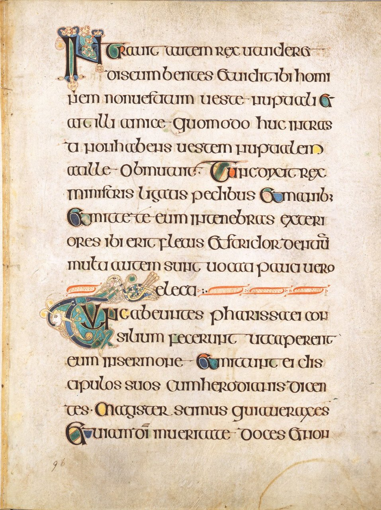

Półuncjała
Pierwszy rodzaj pisma stworzony w średniowieczu. Badacze pisma charakteryzują kilka odmian półuncjały, a różnice wynikają z rozbicia wczesnośredniowiecznej Europy na państwa narodowe i plemienne oraz z ukształtowania się kilku, utrzymujących bardzo słabe kontakty, ośrodków władzy i kultury.
Pojawienie się półuncjały w VI wieku było przełomem w dotychczasowej historii pisma. Wszystkie starsze pisma (z wyjątkiem pewnych elementów w kursywie młodszej) miały litery jednakowej wysokości, tymczasem półuncjała wprowadziła różną wysokość liter. Sporo z nich miało wydłużenia górne i dolne zdecydowanie wysuwające się z linii tekstu w przestrzeń między wierszami. Półuncjała, mimo że wciąż była pismem majuskulnym, posiadała więc pewne cechy pisma minuskulnego.
Litery były wyraźnie zaokrąglone, mocno cieniowane i pisane płynnie. Pojawiły się linie łączące ze sobą litery wyrazu: to efekt szybkiego pisania i jednocześnie sposób na przyspieszenie. Wyrazy były od siebie oddzielane odstępami, choć brak było jeszcze interpunkcji.
